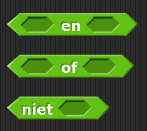

Wat is een predikaat?
In deze les, ga je werken aan een woordpuzzeloplosser die door een lange lijst aan woorden gaat zoeken en woorden met specifieke tekens zal melden.
Op deze pagina, ga je kijken naar zulke predikaten en zul je er zelf ook een paar bouwen die je kunt gebruiken in andere projecten.
Predikaten
Predikaten zijn blokken die die altijd een Boolean waarde melden
(ze geven alleen een  of
of  ). In Snap!
worden deze weergegeven door middel van hexagonale (zes-hoekige) blokken.
). In Snap!
worden deze weergegeven door middel van hexagonale (zes-hoekige) blokken.
Je bent predikaten al eens eerder tegen gekomen. Predikaten verwerken de condities die gebruikt
worden door conditionele of voorwaardelijke blokoken (zoals als of herhaal
tot) om te beslissen wanneer ze ies moeten doen. Predikaten stellen een vraag als "Bezit de
spelerlijst het antwoord van de speler?" of "Raakt deze sprite de sprite aan die
'Sprite' heet?"


-
"H2L3-Predikaten"

- In de laatste les (en ook veel eerder terug bij
Hoofdstuk 1 Les 5), heb je
scripts gemaakt waarin de sprite de muis volgde.

Nu ga je een script maken dat ervoor zorgt dat je met je muis in je speelveld kunt schrijven in twee kleuren, afhankelijk van de positie van de muis:
Gebruik een van de gelijk/ongelijk-predikaten:

- Verbeter je tekenscript zodanig dat de sprite altijd de muis volgt, maar alleen maar iets tekent
wanneer de knop van de muis naar ingedrukt is, zodat je niet-verbonden vormen kunt tekenen.
Zorg dat het versleepbaar-blok niet aangevinkt is boven het script gedeelte voordat je dit probeert (zodat Snap! niet denkt dat je een sprite probeert te verslepen wanneer je erop klikt).
 Waarschijnlijk wil je het
Waarschijnlijk wil je het blok gebruiken, dat je kunt vinden in het
Waarneem-palet.
blok gebruiken, dat je kunt vinden in het
Waarneem-palet.
-
Bouw een predikaat dat zegt of een invoergetal tussen twee andere getallen staat, en test het in verschillende gevallen.
Je zult misschien één of meer van zulke Boolean-operatoren handing vinden voor
tussen?.
Je kunt kiezen of je
tussen?blok de twee grens-getallen bevat of niet. Je kunt dit later nog veranderen, afhankelijk van waar je het blok gebruikt.


Een predikaat maken
- Kies de hexagonale predikaatvorm.

- Je moet het
 blok
gebruiken om de resultaten van de rapporteerfuncties te melden (inclusief
predikaatfuncties).
blok
gebruiken om de resultaten van de rapporteerfuncties te melden (inclusief
predikaatfuncties).
Veel talen gebruiken
returnin plaats vanrapporteerals naam van het commando dat een waarde terug geeft aan het eind van een functie. - Kies de hexagonale predikaatvorm.
- Gebruik
tussen?om een script te schrijven dat ervoor zorgt dat je met drie kleuren kunt schrijven in je speelveld (afhankelijk van je hoogte op het speelveld), gebruik je muis:
Je letters zullen verbonden zijn tenzij je de tijd had om de niet-verbondenheid te coderen zoals eerder genoemd. - Bouw een predikaat dat test voor deelbaarheid door de stappen hieronder te volgen.


- Experimenteer eerst met het
moduloblok.- Probeer verschillende inputs.
- Laat het tweede getal als constante, en probeer verschillende invoeren voor het eerste getal.
- Stel een hypothese op. Wat valt je op?
- Definieer nu het
 predikaat met het gebruik van
predikaat met het gebruik van modulo.
Het
 blok
rapporteert wat overblijft nadat het eerste getal is gedeeld door het
tweede.
blok
rapporteert wat overblijft nadat het eerste getal is gedeeld door het
tweede.  rapporteert
bijvoorbeeld 2 omdat
wanneer 17 wordt gedeeld door 5, er 2 overblijft.
Wanneer een getal een ander getal geheel deelt, dan blijft er 0 over. Dus
rapporteert
bijvoorbeeld 2 omdat
wanneer 17 wordt gedeeld door 5, er 2 overblijft.
Wanneer een getal een ander getal geheel deelt, dan blijft er 0 over. Dus  rapporteert 0.
rapporteert 0. - Experimenteer eerst met het
- Gebruik je
deelbaarpredikaat om een andere predikaat te bouwen dat test of de input even (deelbaar door 2) is.


 In dit plaatje, zijn de even en oneven genummerde rijen verschillend. In de volgende les, ga je het
In dit plaatje, zijn de even en oneven genummerde rijen verschillend. In de volgende les, ga je heteven?blok gebruiken om een muur van baksteente tekenen.

- Bouw een predikaat dat test of de invoer een integer oftewel een heel getal is. Hierbij vind je
misschien handig.


Zelf-Check: Predikaten
-
Er is geen standaard ≤ blok in Snap!. Stel, we willen er zo eentje bouwen. Welke twee van de volgende Boolean expressies zijn gelijk aan de expressie
 ?
Kan num beide minder dan 23 en gelijk aan 23 zijn, tegelijkertijd?
?
Kan num beide minder dan 23 en gelijk aan 23 zijn, tegelijkertijd? Heel goed! Deze afbeelding laat een expressie zien die
Heel goed! Deze afbeelding laat een expressie zien diewaarmeldt als num minder or gelijk is aan 23. Heel goed! Als num niet groter dan 23 is, dan is het of kleiner dan 23 of gelijk aan 23.
Heel goed! Als num niet groter dan 23 is, dan is het of kleiner dan 23 of gelijk aan 23. Stel dat de waarde van num 22.5 is. Zou dan deze expressie en de expressie gegeven in de vraag dezelfde reactie geven?Het volgende code fragment was ontworpen om getal te testen op een oneven nummer:
Stel dat de waarde van num 22.5 is. Zou dan deze expressie en de expressie gegeven in de vraag dezelfde reactie geven?Het volgende code fragment was ontworpen om getal te testen op een oneven nummer:
if (ONTBREKENDE CONDITIE) { DISPLAY "This number is odd." }
Welke van de volgende opties kan gebruikt worden op de plaats van de ONTBREKENDE CONDITIE?
 Het
Hetmoduloblok rapporteert het overgeblevene wanneer het eerste getal wordt gedeeld door het tweede getal. Of een nummer even of oneven is, hangt af of het gedeeld kan worden door 2. Het
Hetmoduloblok rapporteert het overgeblevene wanneer het eerste getal wordt gedeeld door het tweede getal. Of een nummer even of oneven is, hangt af of het gedeeld kan worden door 2. (getal modulo 2) produceert het overgeblevene nadat het getal gedeeld is door 2. Als het overblijfsel 0 is, is het nummer dan even of oneven?Heel goed! (getal mod 2) produceert het overgeblevene nadat het number gedeeld is door 2. Als (getal mod 2) = 1, dan is het getal oneven.
(getal modulo 2) produceert het overgeblevene nadat het getal gedeeld is door 2. Als het overblijfsel 0 is, is het nummer dan even of oneven?Heel goed! (getal mod 2) produceert het overgeblevene nadat het number gedeeld is door 2. Als (getal mod 2) = 1, dan is het getal oneven.